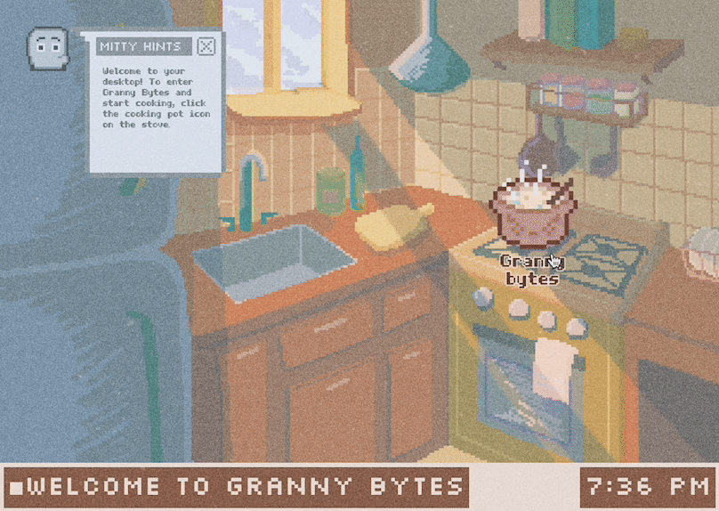
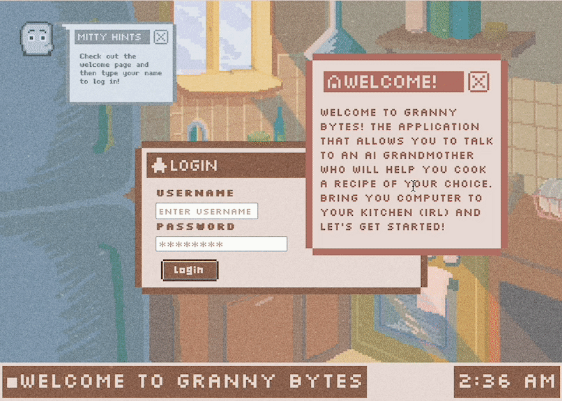
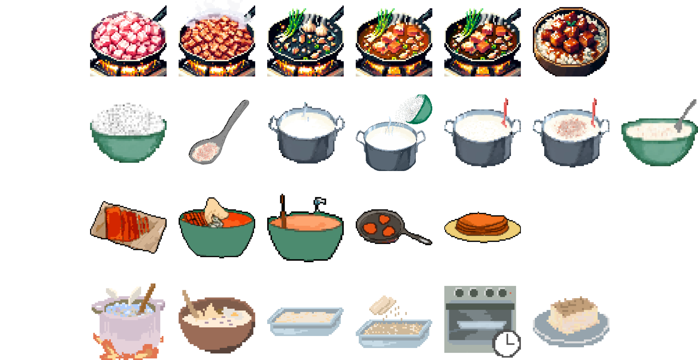
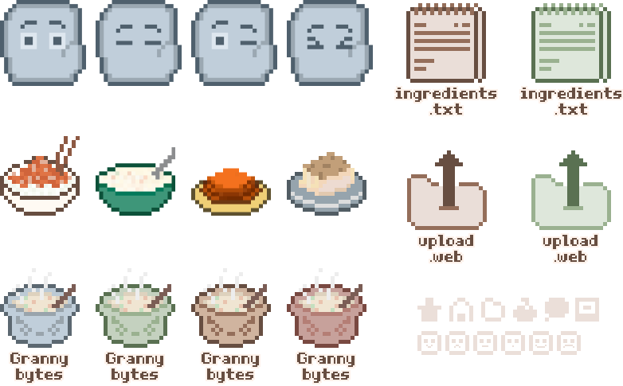

Granny Bytes
COLLABORATORS: Robin Altman, Christine Chang, Hannah Lee
PROJECT ROLE: UI/UX Designer, Developer, Prompt Engineer, Visuals
TOOLKIT: Figma, Adobe Illustrator, Adobe Premiere Pro, HTML/CSS, JavaScript (Node.js, Express.js), Google's Gemini Pro and Gemini Pro Vision models
AI based interactions
Intergenerational Cooking
Cultural Recipes
Overview
Granny Bytes is a web-based AI cooking companion that combines a small library of real family recipes with a conversational “grandmother” guide. We explored how reframing AI as a familiar, caring presence of “Grandma” could create a sense of permanence in a relationship that can feel fleeting, questioning the shift from transactional to relational tools and their potential to support community, preserve stories, and foster generational closeness.
Users select a recipe, follow the steps, ask questions in plain language, and optionally upload a photo for structured feedback.
Problem
Family recipes are often incomplete—missing amounts, assuming a pan you do not own, or skipping “obvious” steps a grandparent would have shown in person. Younger cooks also reach for phones mid-task, where default LLM answers can feel cold, overly generic, or unsafe for food handling. We wanted a constrained, step-based flow that behaved more like a patient elder at the counter rather than an AI dump.
An application for lasting connection
Within the relationship of grandparents and younger generations, food is a big factor of unification, and so we decided to use cooking as the focus for mirroring this relationship– seeing how AI and cooking can be a facet of our humanity.
The app features four family recipes, each from a team member's grandmother, representing different cultures, with detailed ingredients and steps. It provides warmth and guidance, reminiscent of a grandmother’s presence, helping users recreate cherished dishes, clarify quantities, and connect with cultural roots.


Visual & UI System
Before coding, we finalised typography, colours, and component design in Figma so the recipe layout, conversational guide and imagery all felt like a cozy kitchen—not just another chatbot. All UI assets and icons were hand-drawn to enhance the app’s warm tone as well.



User Flow
1. Choose a Dish — Select from 4 pre-written cultural recipes from each team member’s grandmother.
2. Prep & Steps — Ingredients stay pinned on the side; the conversational guide shares one recipe step at a time. Users can ask clarifying questions at each step and must receive an answer before proceeding, minimizing hallucinated AI shortcuts.
3. Photo Feedback — After the final step, users upload a photo of their prepared dish. Gemini Pro Vision provides concise feedback on colour, doneness, garnish, and one or two actionable tweaks—still in-character, within the recipe context.
Chat with Granny Bytes on your next cooking adventure.


How can AI provide warmth and care?
In this app, “Warmth” is a concrete design output. We scripted the guide to stay within the active recipe, acknowledge uncertainty, and avoid inventing ingredients. System prompts combine step explanations with shot examples of the desired tone—patient, warm, specific, and lightly personal. The server attaches the active dish and step index to each Gemini request to prevent context leakage and stop the AI from rushing to the next step on its own.
The tone was crucial, requiring fine-tuning LLM responses. We created a cohesive visual design to complement the warm responses. Vision prompts comment on food presentation and doneness signals, reinforcing effort, suggesting tweaks, or praising the dish’s outcome.
Outcome & Next Steps
We designed, user tested, and developed a stable demo on Render with the four recipes, conversational guide, and image analysis. Future plans include enabling users to add their own family recipes and enhancing the model’s accuracy in handling edge cases like allergen substitutions and missing tools.